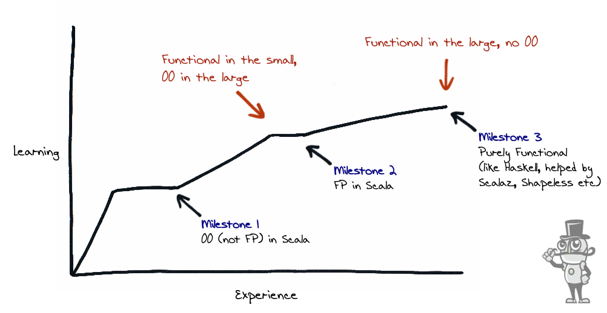

Web Service 兴起
Martin Odersky 基于 Funnel 语言为原型, 开始设计一种针对 Web Service 的, 集函数式特性与面向对象特性为一体的程序语言
Scala 的 Java 平台和 .Net 平台 1.0 版本先后发布
Scala 2.0 版本问世. 其编译器由 Scala 编写.
被需求驱动快速发布包含新特性的子版本.
Scala 2.10 版本, 支持了隐式转换, 宏与反射.
Scala.js 0.1 版本发布.
case class Person(firstName: String, lastName: String)
Where the name Scala came from.
Find the lady (three-card monte)
Document OR Source Code?

You might fall in love with it.
通过 Chainable 的语言风格以 纯函数 的形式来描述对数据的处理流程.
var count = 0; val mkEffect = (input1: Int) => { count = count + 1 println(s"The current count is $count") val input2 = readLine() input1 + Integer.parseInt(input2) }
Philip Wadler :
Monad 是自函子范畴上的一个含幺半群.
Java 里的泛型是一阶类型构造器 (first-order type) :
class List<T> {}
在 Scala 里这样表示
class List[T] {}
在 Scala 里还支持高阶类型构造器
class List[F[_]] {}
trait Dev class ScalaDev extends Dev
trait 也可以是高阶的
trait Dev[F[_]] class ScalaDev[A] extends Dev[ScalaDev] val lex = new ScalaDev[Int]
trait Monad[F[_]] { def pure[A](a: => A): F[A] // point def flatMap[A, B](fa: F[A])(f: A => F[B]): F[B] // bind }
F 是一个 Monad, 则方法注入后
class F[A] { def flatMap[A, B](f: A => F[B]): F[B] }
val f: A => F[B] = ??? val a: A = ??? Monad[F].pure[A](a).flatMap(f) === f(a)
val m: F[A] = ??? m.flatMap(Monad[F].pure) === m
val m: F[A] = ??? val f: A => F[B] = ??? val g: B => F[C] = ??? m.flatMap(f).flatMap(g) === m.flatMap( a => f(a).flatMap(g) )
用户给出一个类型为 A 的值, 但也有可能什么都不给, 不用 null 该如何表示?
trait Option[+A] class Some[A](value: A) extends Option[A] object None extends Option[Nothing]
考虑有两个值,
val value1: Option[Int] = ??? val value2: Option[Int] = ??? value1.flatMap { v1 => value2.flatMap { v2 => v1 + v2 } }
更 scala 的写法是
for { v1 <- value1 v2 <- value2 } yield v1 + v2
trait Either[+A, +B] class Left[A](value: A) extends Either[A, Nothing] class Right[B](value: B) extends Either[Nothing, B]
考虑场景, 可能出错的多个有序处理过程,
def userInputName: Either[String] = ??? def findInvoiceFromDatabaseBy(name: String): Either[Invoice] = ??? def getJsonFromInvoice(invoice: Invoice): Json = ??? val json = userInputName.flatMap { name => findInvoiceFromDatabaseBy(name) => { invoice => getJsonFromInvoice(invoice) } }
更 scala 的写法是
val json = for { name <- userInputName invoice <- findInvoiceFromDatabaseBy(name) json <- getJsonFromInvoice(invoice) } yield json
class Reader[A, B](run: A => B) def ask[B]: Reader[B, B] = Reader[B, B](identity[B]) def pure[A, B](b: B): Reader[A, B] = Reader[A, B](_ => b)
考虑, 我们需要一个从某处获取的配置文件, 并以此为基础做后续处理
def getApiEndpoint: Reader[Config, URI] = ask[Config].flatMap(config => pure[Config, URI](config.endpoint)) def getCountFromApi(uri: URI): Reader[Config, Int] = pure[Config, Int](syncGet(uri+"/count")) val count = getApiEndpoint.flatMap { uri => getCountFromApi(uri) }.run(config)
更 scala 的写法是
val count = (for { uri <- getApiEndpoint(config) count <- getCountFromApi(uri) } yield count).run(config)
#+BEGIN_NOTES Reader 能够做到
Bye.